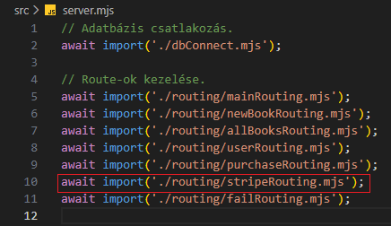
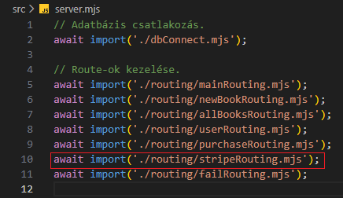

Fizetés beállítása - stripeRouting.mjs
Fizetés beállítása - stripeRouting.mjs
Ebben a részben szerkesztjük az src/routing mappában a stripeRouting.mjs állományt, amelyben összekötjük a /api/stripe route-ot a logikával.
-
Szerkesszük a
stripeRouting.mjsállományt.
-
import app from '../app.mjs';- azappobjektum alapértelmezett beimportálása. -
import stripeRouter from '../../routes/stripeRoutes.mjs';- astripeRouterfüggvény alapértelmezett beimportálása. -
app.use('/api/stripe', stripeRouter);- ausemiddlewaresegítségével a/api/striperoute-hoz csatoljuk astripeRouterfüggvényt.
Azaz bármikor is küldünk egyhttp://localhost:PORT/api/stripelekérést a webszervernek, akkor az ehhez tartozó logikával tér vissza.
-
-
Szerkesszük újra a
server.mjsállományt. és 
-
await import('./routing/stripeRouting.mjs');- importáljuk be astripeRouting.mjs-ben létrehozottpromise-t.
-
-
Az eddigi munka letölthető formátumban:
backend_09.rar
Letöltés és kicsomagolás után aGitBashfelületen abackendmappában adjuk ki a következő utasítást:
npm install -
A webszerver futtatásához adjuk ki a következő utasítást a
GitBashfelületen:
node --watch ./src/server.mjs